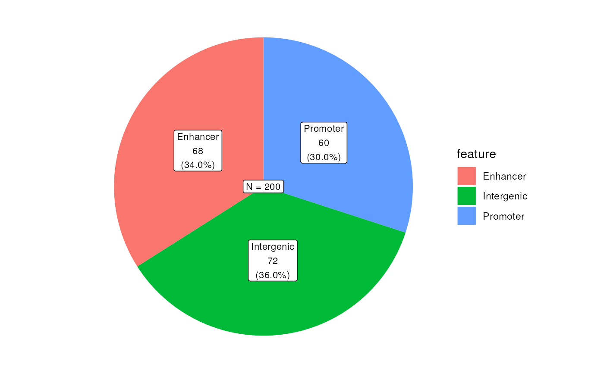
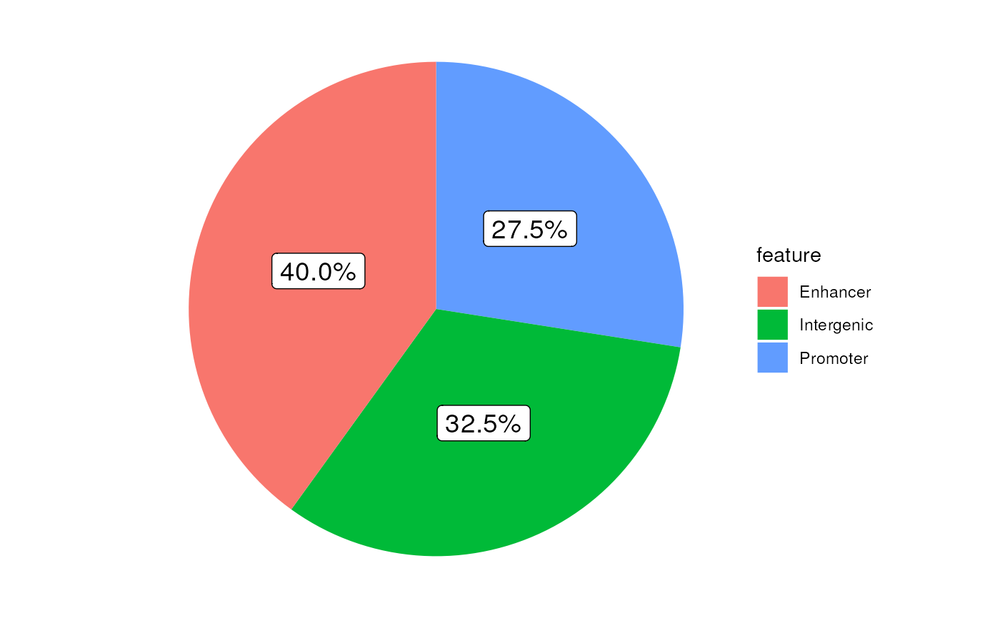
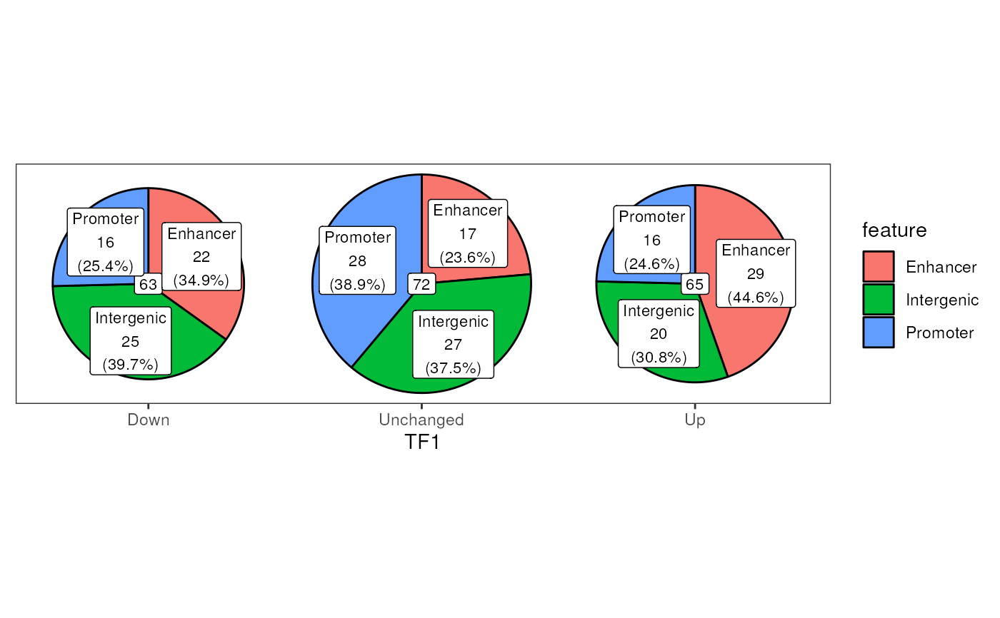
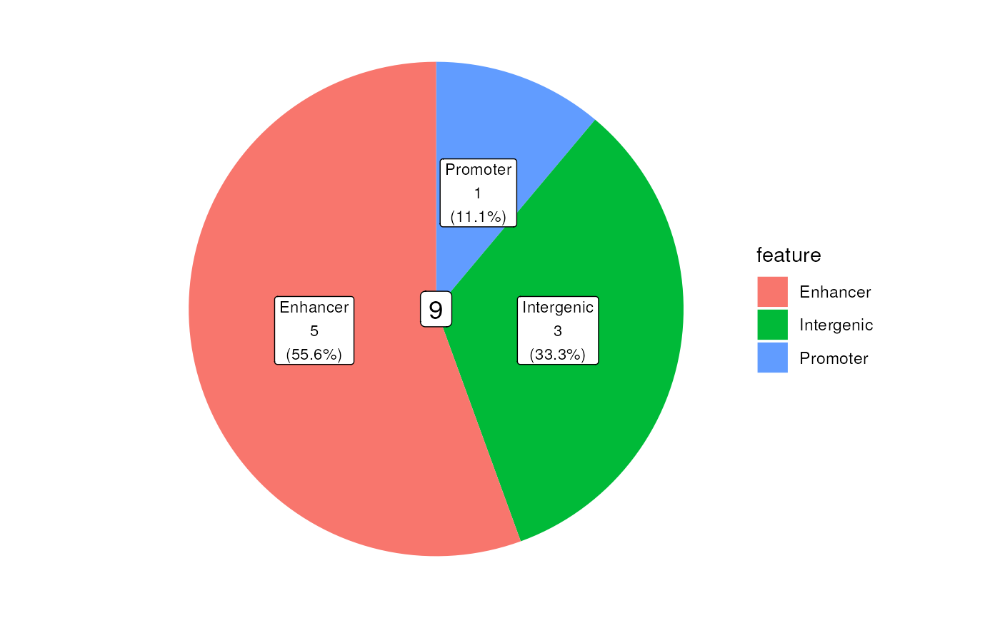
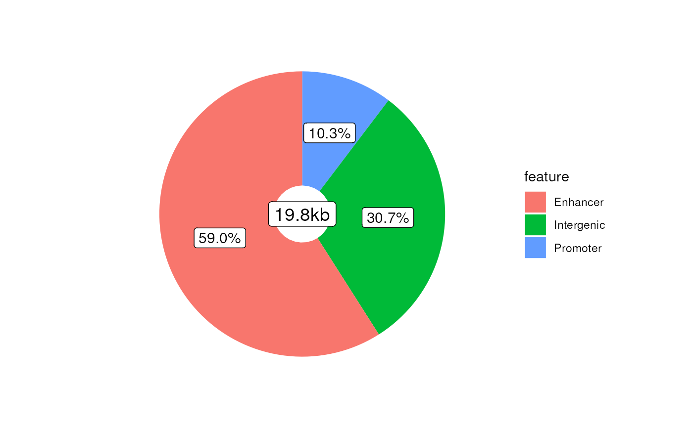

Draw Pie Graphs based on one or more columns
Source:R/AllGenerics.R, R/plotPie.R
plotPie-methods.RdDraw Pie Graphs based one or more data.frame columns
plotPie(object, ...)
# S4 method for GRanges
plotPie(object, scale_by = c("n", "width"), ...)
# S4 method for DataFrame
plotPie(object, ...)
# S4 method for data.frame
plotPie(
object,
fill,
x,
y,
scale_by,
width = 0.8,
show_total = TRUE,
label_fill = "white",
label_alpha = 1,
label_size = 3,
min_p = 0.01,
show_category = TRUE,
category_size = 3,
category_colour = "black",
category_width = 15,
...
)Arguments
- object
An object (
data.frame)- ...
Not used
- scale_by
Scale the counts by this column. In this case of a GRanges object this defaults to the count (scale_by = "n") but can also be specified as being width of each range (scale_by = "width"). If choosing width, width will be displayed in Kb
- fill
The category/column used to fill the slices of the pie charts
- x
The second (optional) category/column to place along the x-axis
- y
The final (optional) category/column to plce along the y-axis
- width
Scale the width of all pies
- show_total
logical(1) Show labels on each pie chart with the tally for that complete chart
- label_fill
The background colour for tally labels
- label_alpha
Transparency for tally labels
- label_size
Size of the tally labels. Passed to geom_label
- min_p
The minimum proportion of the total required for adding labels. Effectively removes labels from pie charts with few members. Alternatively when only one column is specified, categories below this will not be shown around the edge of the plot
- show_category
Show category labels around the edge of the plot if only one category/column is specified
- category_size
The size of category labels if only one category/column is specified
- category_colour
The colour of category labels if only one column is specified
- category_width
Width at which category labels will wrap onto a new line
Value
A ggplot2 object able to be customised with colour scales and themes.
Also note that the $data element of the returned object will contain the
data.frame used for plotting. The additional column label_radians
represents the mid-point of each pie slice and can be used for manually
adding labels to each pie.
Only applies when plotting across the x or y axes
Details
Using a data.frame as input, this function will draw pie graphs based
on one ore more columns, by simply counting the values in combination
across these columns.
One column must be selected for the fill as a bare minimum, with up to three
being possible.
Additional columns can be set for the x-axis to draw a series of pie-graphs
in a row, with a further column able to added to layout a series of pie
graphs in a grid
If only one column/category is chosen, category labels will be added around the edge of the plot
If show_total = TRUE the overall counts for each pie graph will be added
in the centre using geom_label.
Parameters for these labels are customisable
Examples
set.seed(200)
df <- data.frame(
feature = sample(
c("Promoter", "Enhancer", "Intergenic"), 200, replace = TRUE
),
TF1 = sample(c("Up", "Down", "Unchanged"), 200, replace = TRUE),
TF2 = sample(c("Up", "Down", "Unchanged"), 200, replace = TRUE),
w = rexp(200)
)
plotPie(df, fill = "feature")

plotPie(df, fill = "feature", scale_by = "w")

plotPie(df, fill = "feature", x = "TF1")

plotPie(df, fill = "feature", x = "TF1", y = "TF2") +
scale_fill_viridis_d() +
theme_bw()
## Manually adding percentages
plotPie(df, fill = "feature", x = "TF1", label_size = 5) +
geom_label(
aes(x_lab, y_lab, label = lab),
data = . %>%
dplyr::mutate(
x_lab = x + 0.5*r*sin(label_radians),
y_lab = 1 + 0.5*r*cos(label_radians),
lab = scales::percent(p, 0.1)
),
size = 3.5
)

## And using a GRanges object
data("ex_prom")
gr <- ex_prom
mcols(gr) <- df[seq_along(gr),]
## Show values by counts
plotPie(gr, fill = "feature")

## Show values scaled by width of each range
plotPie(gr, fill = "feature", scale_by = "width")